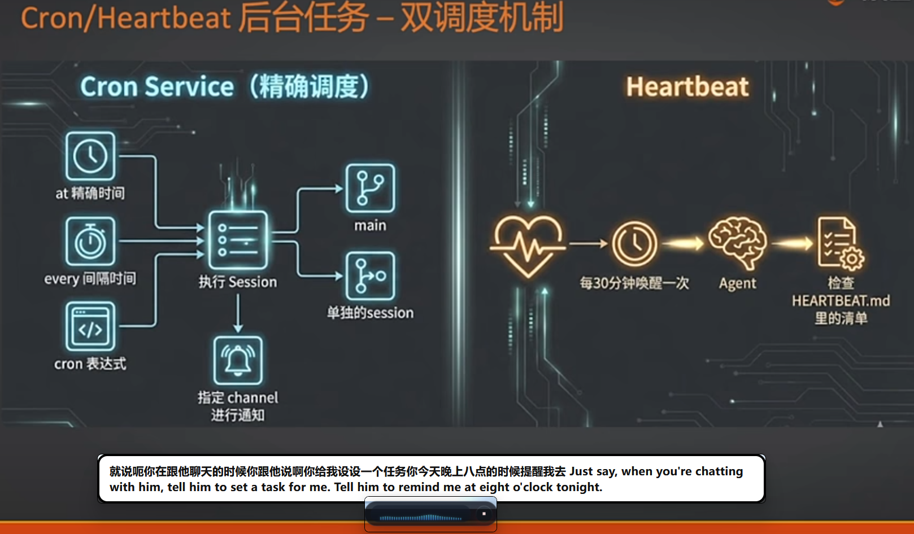

实时翻译功能
无界音流内置了强大的翻译代理功能，支持调用大语言模型（如 OpenAI、Ollama 等）进行高质量的多语言互译。这使得它不仅是一个语音记录工具，更是一个跨语言沟通的得力助手。

翻译功能介绍
开启翻译功能后，无界音流会将识别出的语音文本实时翻译为您指定的目标语言。翻译结果将直接显示在界面上，或通过“跟随光标注入”功能输入到您的文档中。
提示： 翻译功能只影响“显示/复制/最终注入”的文本，不会改变语音识别（STT）的语言参数。
配置翻译服务
要使用翻译功能，您需要在设置中进行以下配置：
1
启用翻译输出
在设置中勾选“启用翻译输出”。
2
选择目标语言
选择您希望翻译成的语言（如英语、日语等）。
3
配置 API 信息
填写翻译服务的 API 地址。例如，OpenAI 兼容接口通常是 https://api.openai.com/v1。
填写服务端要求的模型标识，如 gpt-4o-mini、deepseek-chat 等。
填写您的 API 密钥。该密钥仅保存在您的本机设置中，不会上传到任何服务器。
推荐翻译模型（Ollama）
如果您希望在本机离线/局域网环境使用翻译，推荐使用 Ollama 拉取翻译模型（参考 Ollama 文档；小白安装指南见 附录 B）：
ollama pull ZimaBlueAI/HY-MT1.5-1.8然后在无界音流设置中填写：
- 翻译 API Base URL：
http://localhost:11434/v1 - 翻译模型：
ZimaBlueAI/HY-MT1.5-1.8 - 翻译 API Key：本地 Ollama 可留空
翻译策略选择
无界音流提供了两种翻译策略，以适应不同的使用场景：
- 实时翻译临时结果：对语音识别的中间结果进行实时翻译。这种方式能让您更快看到翻译结果，但可能会更慢且消耗更多的 API 额度。
- 流式输出（推荐）：使用流式 API 输出翻译结果。这种方式在调用本地模型（如 Ollama）时表现更佳，能提供更平滑的阅读体验。
注意： 启用翻译功能后，“实时输出（持续追加，不回退）”模式会自动关闭，以避免翻译延迟导致输入错乱。
Copyright(c) ZimaBlueAI
齐码蓝智能（大理市 ）有限责任公司